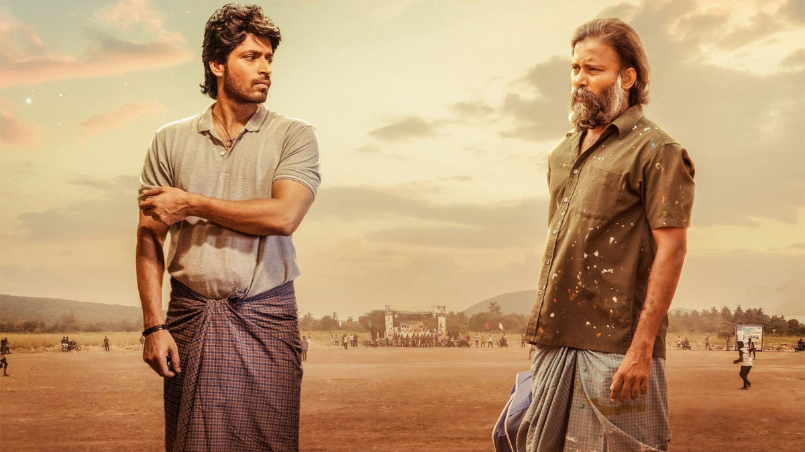
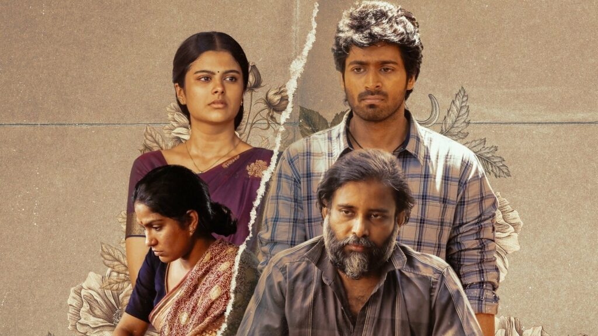

Director: Thamizharasu Pachamuthu
Cast: Attakathi Dinesh,Harish Kalyan,Sanjana Krishnamurthy,Swasika,Bala Saravanan, Nallaklites Jenson
Music: Sean Rolden
Language:Tamil
Runtime: 178 minutes
Storyline: A young rubber-ball cricket bowler locks horns with an experienced batsman only to find out that his arch-nemesis is his girlfriend’s father
Ratings: 9/10
In a country like India where cricket is an emotion, there’s no dearth of films on the beloved sport. From biopics on some of the best players the game has seen, to using cricket as a backdrop for a heart-warming underdog drama, several iterations of the game have been explored. Now with Lubber Pandhu, director Tamizharasan Pachamuthu sheds light on the rubber ball cricket tournament culture prevalent in the deep pockets of Tamil Nadu, and intricately weaves an intriguing narrative around it.
In the film, Anbu (Harish Kalyan) is a small-town guy and a gifted bowler who crosses paths with Poomalai a.k.a. Gethu (Attakathi Dinesh), an older, much-revered batsman. A series of unfortunate incidents trigger their egos and their on-field rivalry spills into their personal lives... only for it to hit a crescendo when they learn that Anbu is in a relationship with Gethu’s daughter Durga
Both the lead characters are not particularly challenging roles, though Harish and Dinesh pull them off quite well; the reason boils down to how their characters have been sketched. Anbu and Gethu are two men belonging to two different generations but that’s about all the distinctions they have. Speaking of names, Yashoda (played by an impressive Swasika) has to turn into a mother figure for her husband Gethu who prioritises his game over the betterment of his family. For a film on a sport between testosterone-powered men, Lubber Pandhu pleasantly surprises you with how well the women characters are written.
While the romantic portions between Anbu and his girlfriend Durga (Sanjana Krishnamoorthy) are written with enough care to not slacken the flow of the film, it’s the matured romance between Yashoda and Gethu that is most memorable.But arguably the best part of the film is how it never villainises any of its characters or romanticises their flaws; it shows them to be a product of their circumstances, and how all it takes is one right call to get into the good books of their family members.
The director spins a googly with these sequences as he goes against the grains of usual cricket film tropes. Tamizharasan subverts expectations at crucial moments and these nuggets of little wins lets us ignore the film’s snags such as a forced female empowerment trope surrounding a player, that feels unnecessary. As with every Tamil film on cricket, there’s ample scope for humour thanks to the colloquial game commentary, but Lubber Pandhu takes it up a notch with the characters played by Bala Saravanan and Jenson Dhivakar.
With several arcs weaved together seamlessly — including the caste oppression angle to which Tamizharasan gives a profound resolution — the filmmaker makes his mark as a talent to watch out for. Lubber Pandhu is a breath of fresh air and a refreshing addition to the ever-growing list of films on cricket; so much so that we can call it a whole new ballgame.